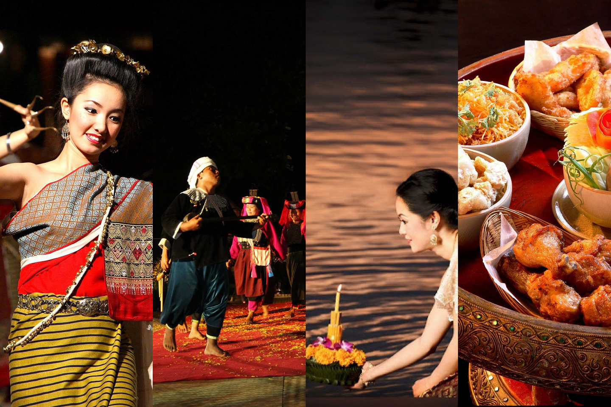

Recreational activities
Ice Breaking Activity
Ice Breaking Activity
“ A great start to a great event! Let’s “break the ice” together ”
Ice Breaking Activity is session at the start of CMU-IMC, held in order to “break the ice” and establish a comfortable environment. With many activities, such as playing games, dancing, singing, and learning Thai local cultures, you will surely feel that it’s worthwhile to join.
Kan-tok Dinner
Kan-tok, a Thai dining experience which you can enjoy well presented dishes of finger foods while watching amusing hill-tribe performances. If you’re looking for an experience of a unique and hearty meal, this traditional culture is a must.
Kan-tok is a special northern round table with several legs connected to the top pedestal tray. Northerners usually use the furniture in special occasions.
Foods of Kan-tok dinner are adapted to foreigners by reducing its spicy taste. The menu consists of Kaeng-hung-ley-moo (pork curry), Nam-prik-num (northern thai green chilli dip), Nam-prik-aong (northern thai meat and tomato spicy dip), fried chicken, streaky pork with crispy crackling, fresh vegetable, stir-fried vegetable, sweet crispy noodles, fried pumpkin, etc., served with sticky rice, packed in a classical woven bamboo basket. Desserts are served separately consisting fried rice cookies and tea or coffee.
Besides, the Kan-tok dinner is also adapted for vegetarians and Muslims.
During Kan-tok dinner, an orchestra will be playing soothing Thai folk songs to accompany troupes of dancers, performing emotional Lanna dances that express modesty of the northern people’s lifestyle and their respects to the Buddha. The combination of traditional Thai music and graceful dances is a pageant of Lanna’s history.
Finally, after the meal, we proudly present you “Loi Krathong”. The historical tradition has been arranged for long time ago. “Krathong” is a floating basket made from a slice of the trunk of a banana tree decorated with folded banana leaves, flowers, a candle and joss sticks. It can be created into various forms such as a lotus flower or boat, to be floated on the night of the full moon in order to thank and apologize the water goddess. This event will surely be pleasurable and fun to all.
Farewell Party
Farewell Party
“ Last night’s unforgettable farewell party
The best place to make wonderful memories
”
Farewell Party, a party held on the last night of the event. You will be impressed with multiple shows from both the facilitators and applicants. Also, there will be Mr. and Miss CMU-IMC, chosen by popular vote. Games are provided both on stage and around the party. Finale to the day’s event will be a concert with numerous songs to dance and sing along.